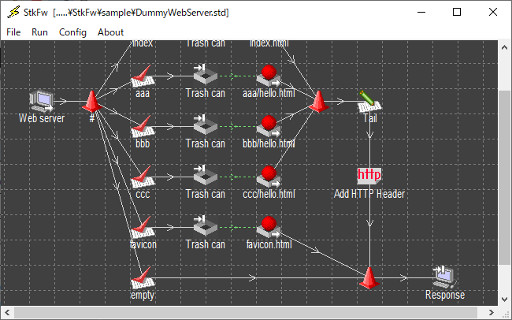

Summary of StkFw
StkFw is a test support software solution that simulates environments in
which multiple pieces of software and/or hardware work together on an
IP network.
In the development of software designed to work and cooperate with complex
and valuable elements (software and/or hardware) on a network, the use of
a testing program that simulates network element behavior is a well-known
solution for reducing overall development costs.
However, if the behavior (i.e., communication with other network elements)
of the software being developed is complex, the initial costs of creating
a test program may be high.
StkFw can be used to facilitate the control of data communication on an
IP network based on its superior user interface. It simulates behavior
identical to that of testing programs and reduces the overall cost of
testing during the target software's development by eliminating the need
to create a dedicated testing program.

System requirements
StkFw works on systems with the following specifications:
- CPU: 1 GHz or more
- Memory: 512 MB or more
- Free disk space: 20 MB or more
- Operating systems/editions supported:
Windows 10 (Only 64 bit edition)
Windows Server 2016
Windows Server 2019
Change history
Version 1.5.0 ---> 1.6.0
- Support enabled for data reception which the specified size of
Content-Length in HTTP header as a new terminate condition of TCP receiver.
- Support enabled for removal and addition of HTTP header as a new processing element.
- Support enabled for Windows Server 2016.
Version 1.4.0 ---> 1.5.0
- Installer program files integrated into a single MSI file.
- Support enabled for multiple-client connections using the same port number.
- Fixed a bug whereby the current folder was not configured as the folder
where the .std file was placed when the program was launched with /open
and /start parameters.
- Fixed a bug whereby redundant logs relating to socket closing were
generated by the same receiver element when threads were stopped.
- Support for IPv6 connectivity enabled.
- Support enabled for Windows 8.1, Windows 10 and Windows Server 2012 R2.
Version 1.6.0 ---> 1.7.0
- Fixed a bug which a part of HTTP header string is inappropriately deleted
when user edits the string on property dialog box of HTTP Header.
- Support enabled for "Transfer-Encoding: chunked" specification in HTTP
header as a new termination condition of TCP receiver.
- Fixed a bug which HTTP header processing element cannot delete a HTTP
header part in response data.
- Support enabled for SSL/LTS connection.
- Support enabled for Windows Server 2019.
Download
1.7.0 Release: 2020/11/23
1.6.0 Release: 2018/11/04
1.5.0 Release: 2015/12/10